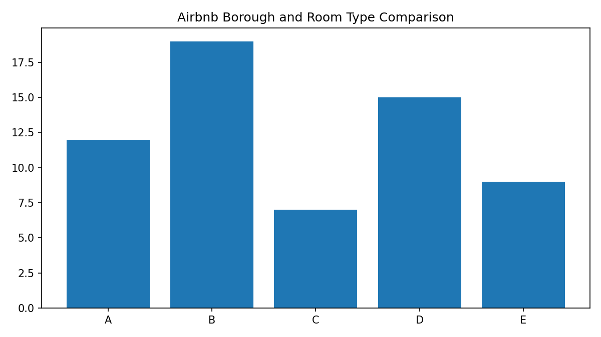

Unit 11 Final Project
The final project analysed Airbnb listing data in New York City using a combination of exploratory data analysis, multivariate linear regression and clustering. The working dataset contained 48,884 cleaned listings after zero-price errors were removed and missing values were addressed. The final analysis found that borough and room type were the strongest pricing drivers, that the regression model explained approximately 53 per cent of the price variation on the log scale, and that K-Means produced four practical market segments. fileciteturn1file0 fileciteturn1file2
What the project showed
- Pricing followed identifiable patterns rather than random variation.
- Location and accommodation type carried the strongest signal.
- Clustering added business value by identifying different listing behaviours.
- Residual variance indicated that additional contextual variables would improve future models.
My contribution
My contribution centred on the analytical framing of the work, interpretation of the outputs and the translation of technical results into practical conclusions. I was particularly involved in explaining what the models meant, where their limits were, and how those limits affected the strength of the business recommendations.
Collaboration and team working
The final project also required coordination across the team. One of the lessons from this stage was that analytical quality depends partly on how well the team aligns on the purpose of the work. In practice, this meant clarifying what each model was meant to answer, agreeing how much technical detail should appear in the report, and ensuring that the written interpretation stayed consistent with the outputs. This process improved as the work progressed and helped produce a more coherent final submission.

Median prices vary strongly by borough and room type, with Manhattan entire homes forming the premium tier.

K-Means clustering produced four practical market segments.

Summary artefact showing the main outputs from the Airbnb project.